Takahata
Takahata · Yamagata
Takahata
Highlighted on the Yamagata map.
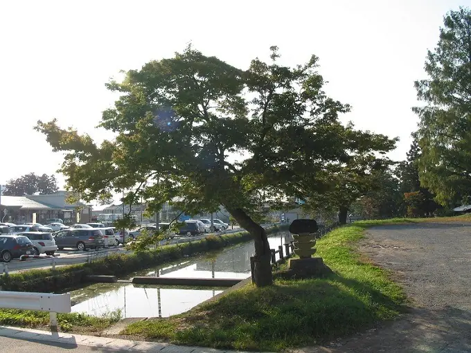
Stay
ホテル フォルクローロ高畠＜JR東日本ホテルズ＞
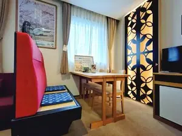
Hoteru Forukurooro Takahata (Jr Higashinihon Hoteruzu)
Hotel in Takahata, Yamagata.
ビジネス たかはた駅前ホテル
Bijinesu Takahata Ekimae Hoteru
Hotel in Takahata, Yamagata.
Dining
山喜
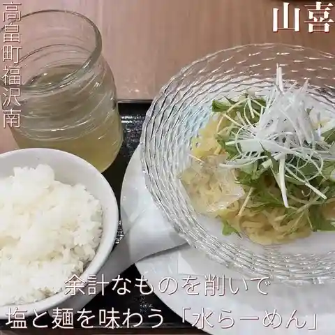
Yama Ki
Ramen shop in Takahata, Yamagata.
すがい
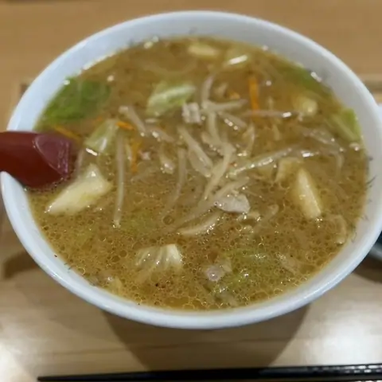
Sugai
Ramen shop in Takahata, Yamagata.
高畠ワイナリー
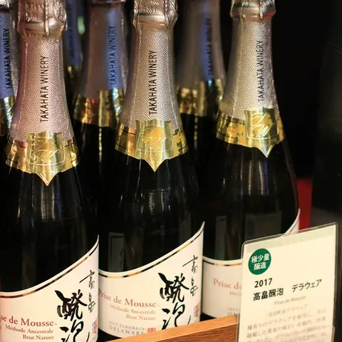
Takahata Wainarii
Soft-serve stand in Takahata, Yamagata.
塩結び
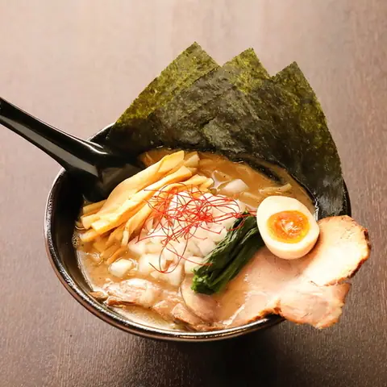
Shio Musubi
Ramen shop in Takahata, Yamagata.
志づ美
Kokorozashi Zu Bi
Ramen shop in Takahata, Yamagata.
たいようパン 直売所
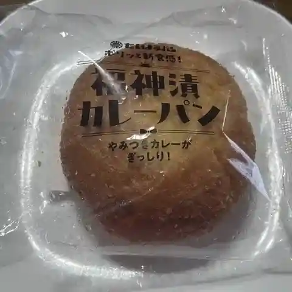
Taiyou Pan Chokubai Tokoro
Bakery in Takahata, Yamagata.
麺屋 吉村
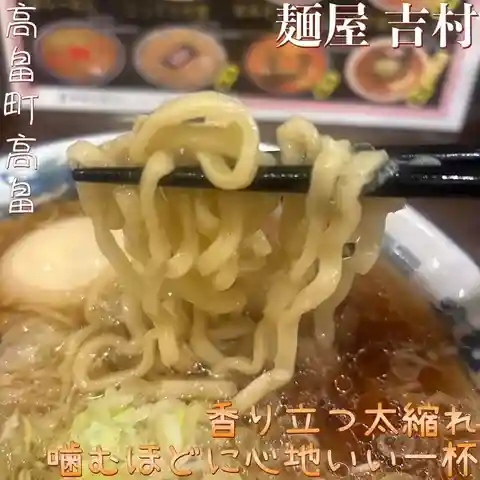
Men Ya Yoshimura
Ramen shop in Takahata, Yamagata.
駅のやきにく屋 さくらんぼ
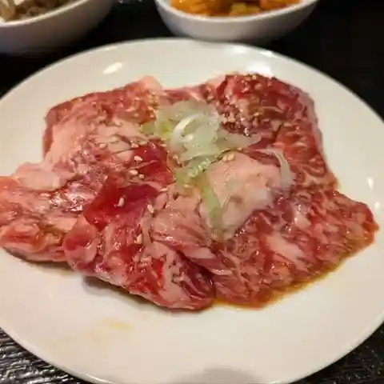
Eki Noyakiniku Ya Sakuranbo
Yakiniku (grilled meat) restaurant in Takahata, Yamagata.
フルール・ドゥ・ソレイユ
Furuuru Dou Soreiyu
French restaurant in Takahata, Yamagata.
伝承・米沢牛 よう山亭
Denshou Yonezawa Ushi You Santei
Yakiniku (grilled meat) restaurant in Takahata, Yamagata.
割烹十文字
Kappou Juumonji
Japanese restaurant in Takahata, Yamagata.
東栄軒
Touei Ken
Shokudo diner in Takahata, Yamagata.
金ちゃんラーメン 高畠店
Kin Chan Raamen Takahata Mise
Ramen shop in Takahata, Yamagata.
ゴッツォナーレ
Gottsuonaare
Gelato and ice-cream shop in Takahata, Yamagata.
道の駅たかはた
Michi No Eki Takahata
Roadside-station eatery in Takahata, Yamagata.
五十番
Gojuu Ban
Ramen shop in Takahata, Yamagata.
風月堂 本店
Fuugetsu Dou Honten
Cake shop in Takahata, Yamagata.
スモークハウス ファイン
Sumookuhausu Fain
Deli in Takahata, Yamagata.
たかはた飯店
Takahata Hanten
Chinese restaurant in Takahata, Yamagata.
つけものと手打ちそばの伊澤
Tsukemonoto Teuchi Chisobano Isawa
Soba restaurant in Takahata, Yamagata.
coco de cachette IZUMIYA
Coco De Cachette Izumiya
Cake shop in Takahata, Yamagata.
ベーカリー ポム ド ジャルダン
Beekarii Pomu Do Jarudan
Bakery in Takahata, Yamagata.
味来屋
Aji Rai Ya
Ramen shop in Takahata, Yamagata.
政乃家
Matsurigoto No Ie
Ramen shop in Takahata, Yamagata.
Sights
Kameoka Monjudo
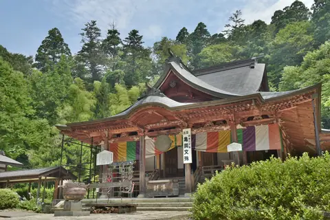
One of Japan's three great Monju temples. A Nio gate with guardian statues stands at the entrance to a cedar-lined approach, and statues of the Sixteen Arhats line the stone path to the main hall.
Takahata Winery
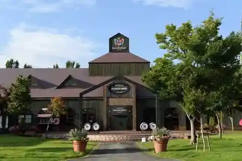
Among the fruit kingdoms of Yamagata, Takahata Town, where Takahata Winery is located,